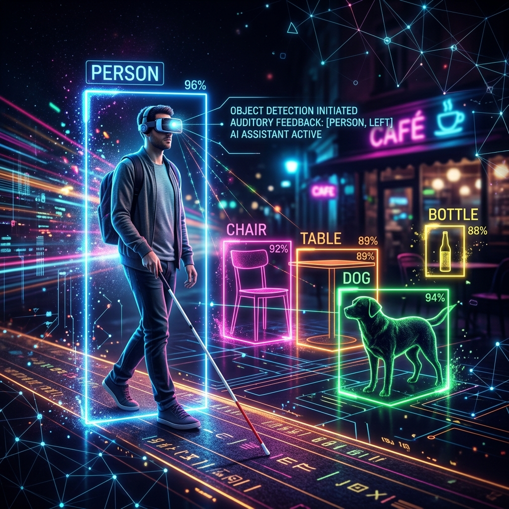
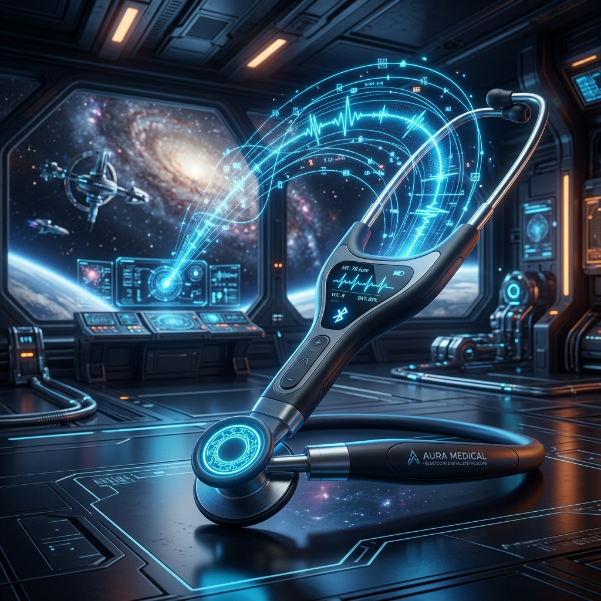
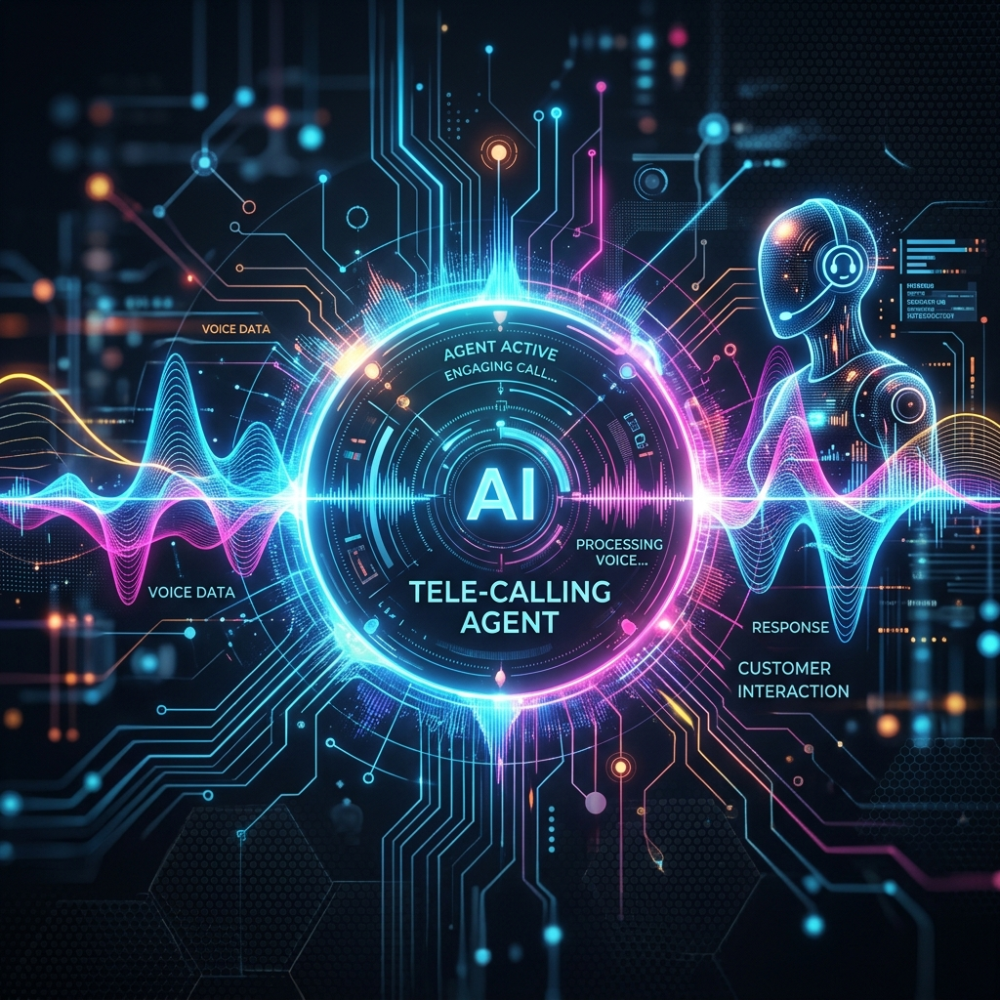

Featured Projects

AI ASSISTANT FOR VISUALLY IMPAIRED PEOPLE
ESP32-CAM
Ultrasonic Sensors
Python (OpenCV)
IoT
A wearable assistive device prototype using an ESP32-CAM and ultrasonic sensors to detect obstacles and identify objects, providing real-time audio feedback to the user.
- Hardware-based object recognition
- Ultrasonic obstacle detection
- DIY wearable prototype design
- Real-time audio assistance

Bluetooth Digital Stethoscope
Embedded Systems
Bluetooth Comm.
Designed a digital stethoscope capable of transmitting heart and lung sounds wirelessly through Bluetooth for remote monitoring.
- Wireless audio transmission
- Reduced signal noise
- Real-time monitoring

AI Tele-Calling Agent
AI Voice Gen
NLP
API Integration
Developed an AI-powered tele-calling agent capable of automatically calling customers and interacting using natural voice conversations.
- AI-generated voice calls
- Automated customer interaction
- Call automation system